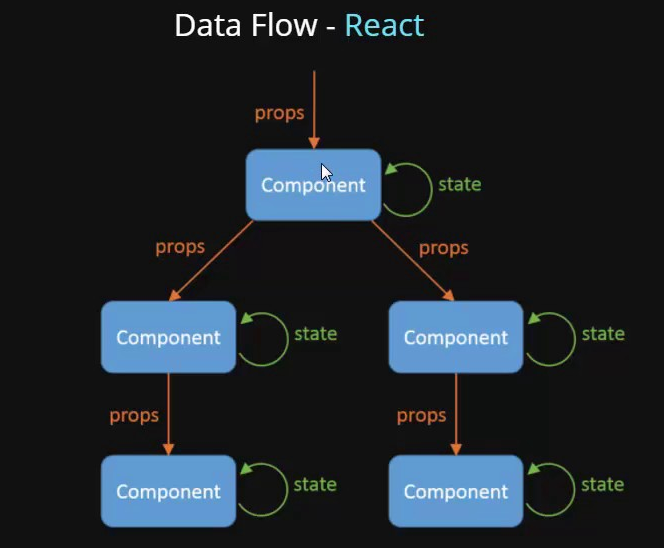

state를 이용하는 상태 관리 방법을 학습한다
state 는 컴포넌트 내에서 사용되는 변수다.
state 를 선언하려면 useState() 훅을 사용하여 변경해야 한다.
One Way Data Flow of React

useState 사용법
useState
React의 컴포넌트 사이에서 데이터를 주고 받는 방법에 대해서 배운다.
부모가 자식에게 데이터를 전달하는 것은 자식컴포넌트에서 부모컴포넌트의 데이터를 이용한(읽기) 로직을 처리하기 위함이고,
자식 컴포넌트에서 부모컴포넌트로 데이터를 전달하는 것은 부모 state의 값을 변경하기 위함입니다.
state down vs state up
- state down: 부모 -> 자식 데이터 전달
- state up: 자식 -> 부모 데이터 전달